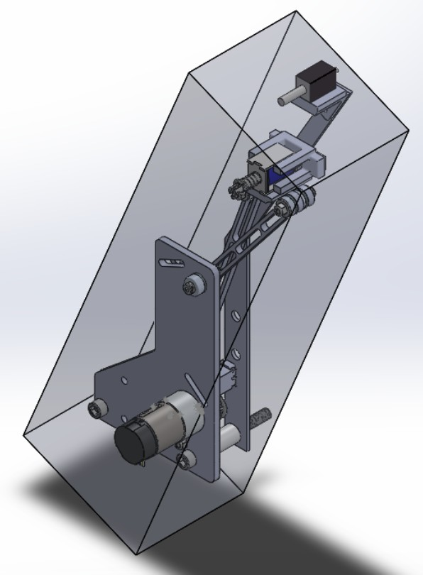
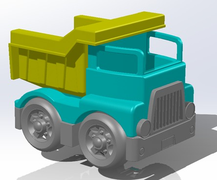
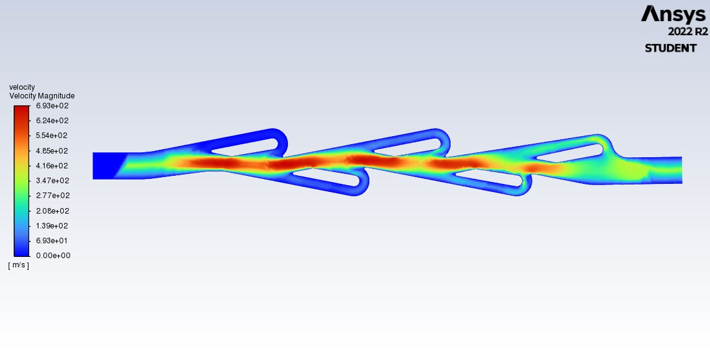

Senior Design

- Group capstone project to find a more effective medium-range transport method
- An Ekranoplan was the optimal solution, which combines the speed of an aircraft with the convience of a boat
- Demonstrated success at the radio-controlled scale, and provided sufficient thrust to be more efficient than aircraft
Machine Design

- Team project to design and build a machine capable of rapidly detecting and pressing illuminated buttons
- Designed a four-bar linkage from scratch to fit actuator requirements
- Constructed from 3D printing and CNC lathes and mills
- Finished in the top 5 groups in the class by optimizing our Arduino code and hardware design
Walking Robot

- Partner-based project to design a legged-robot to walk as fast as possible
- Designed in SOLIDWORKS, and manufactured from 3D Printing
- Optimized walking patterns with machine learning in PyBullet simulations
- Achieved the maximum score with a speed of 33 cm/s
Reverse Engineering

- Individual project to reverse engineer a toy in SOLIDWORKS
- Utilized calipers, protractors, and photos to accurately measure the object
- Modelled in SOLIDWORKS and 3D printed to ensure similarity
Tesla Valve

- Group project to maximize the diodicityA measure of how significantly flow is restricted in one direction compared to the other. inside a Tesla Valve
- Modelled the valve in SOLIDWORKS and performed CFD in Ansys
- Found highest diodicity with a high Reynolds number and more repeated elements in the valve